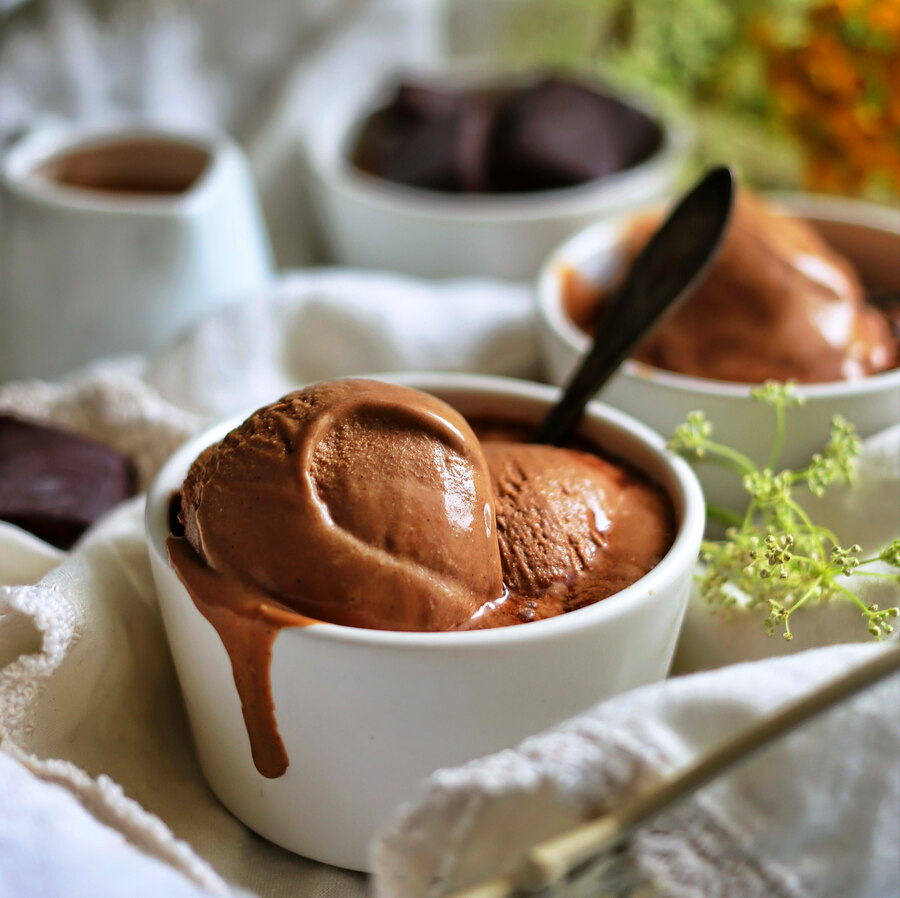

Нет ничего лучше домашнего мороженого! Во-первых, дома можно взять самые лучшие ингредиенты, а это очень влияет на вкус. Как-то раз я вела мастер-класс в фермерском магазине, и мы приготовили мороженое полностью на фермерских продуктах. Тот вкус я помню до сих пор! Во-вторых, дома вы можете составлять вкусовые комбинации, которые можно встретить только в очень хороших кафе с ремесленным мороженым. Это вам не стандартные ванильное-шоколадное-клубничное...
Домашнее мороженое не может не получиться. Это настолько просто, что справится даже ребенок, а результат поразит самого искушенного гурмана. В этом конспекте вы найдете рецепты, которые помогут вам понять основные принципы приготовления мороженого. Очень скоро вы войдете во вкус и будете придумывать рецепты сами! Главное, помните — чем качественнее исходные продукты, тем лучше результат.
Мороженица
Для приготовления домашнего мороженого прежде всего нужна мороженица. Она одновременно замораживает и перемешивает смесь для мороженого, так что оно получается однородным и бархатистым. Конечно, можно попробовать обойтись и без специального устройства, замораживая мороженое в морозилке и перемешивая его вручную, но на выходе оно может получиться с мелкими кристалликами льда.
Сейчас можно купить полуавтоматическую или автоматическую мороженицу. Полуавтоматические модели состоят из съемной чаши с двойными стенками, между которыми находится хладагент, и корпуса с устройством для перемешивания. Чашу нужно предварительно охладить в морозильнике (обычно этот процесс занимает 12-24 часа при температуре -18 °С (0 °F)), затем наполнить ее смесью для мороженого и установить на базу для перемешивания. Обычно процесс приготовления занимает около 40 минут. Такие мороженицы стоят недорого, но после использования их нужно несколько часов размораживать, прежде чем помыть, и снова замораживать, чтобы приготовить следующую порцию мороженого.
Есть более удобные, но и более дорогие автоматические мороженицы со встроенным охлаждающим компрессором. Все просто: заливаете смесь в чашу, нажимаете кнопку и через 30-45 минут получаете готовое мороженое! Такой прибор стоит покупать, если вы планируете делать мороженое часто.
Для некоторых моделей планетарных миксеров, например, KitchenAid, можно докупить съемную чашу для мороженого. Ее тоже нужно заранее охладить в морозилке.
Блендер
Обязательно нужен для приготовления сорбета и измельчения некоторых ингредиентов.
Кастрюля из нержавейки с толстым дном или сотейник
Нужна для приготовления кремовой основы для мороженого и сиропов для сорбета.
Сито для процеживания
Сито нужно для того, чтобы процедить кастард, основу для многих видов мороженого, и удалить комочки желтка, который мог свернуться в процессе приготовления. Кроме того, сито пригодится для процеживания фруктовых и ягодных пюре.
Электронные кухонные весы
Кондитерские рецепты — дело точное, поэтому без весов не обойтись.
Термометр
Кастард мы увариваем до определенной температуры. Термометр как раз поможет нам узнать, готов ли он.
Мир мороженого богат и разнообразен. Кроме привычного нам мороженого на основе молока и сливок есть еще сорбет, приготовленный из фруктов, ягод и даже овощей, замороженный йогурт и колотый фруктовый лед — гранита. Отдельным видом считается также итальянское джелато, которое отличается от обычного сливочного мороженого более медленной техникой охлаждения.
Кастард — основа для мороженого
Давайте подробнее остановимся на технике приготовления основы для сливочного мороженого, так называемого кастарда, или крем-англез.
Чтобы получить кастард, желтки заваривают горячим молоком или сливками и нагревают до температуры 76–82 °С (169–180 °F). При контакте с горячей жидкостью желтки могут свернуться, поэтому нужно соблюдать несколько условий:
1. Не стоит доводить молоко или сливки до кипения и вливать их в желтки слишком быстро.
2. При заваривании обязательно нужно постоянно мешать смесь венчиком.
3. Если варить кастард на сильном огне, желтки тоже могут свернуться, поэтому в первый раз лучше делать это на медленном огне и иногда снимать сотейник с плиты.
В мороженице смесь для мороженого обычно охлаждается около 30-45 минут. Дальше у вас два варианта: сразу подать на стол мягкое мороженое или, если вы любите мороженое потверже, отправить его на несколько часов в морозилку.
Сахар
Сахар не только придает мороженому сладкий вкус, но и отвечает за его кремовую текстуру. Очень важно соблюсти баланс: добавите слишком мало сахара — мороженое будет зернистым и твердым, слишком много — мороженое может не застыть. В рецептах в этом конспекте используется минимально возможное количество сахара.
Алкоголь
В некоторые рецепты мороженого входит алкоголь. Он не только придает мороженому вкус и аромат, но и предотвращает образование крупных кристаллов льда, поэтому мороженое становится более мягким. Однако во всем нужна мера: если алкоголя будет слишком много, мороженое может не замерзнуть вовсе. На 1 литр смеси для мороженого рекомендуется добавлять не более 45 мл (3 ст. л.) алкоголя крепостью 40°, такого как ром или виски.